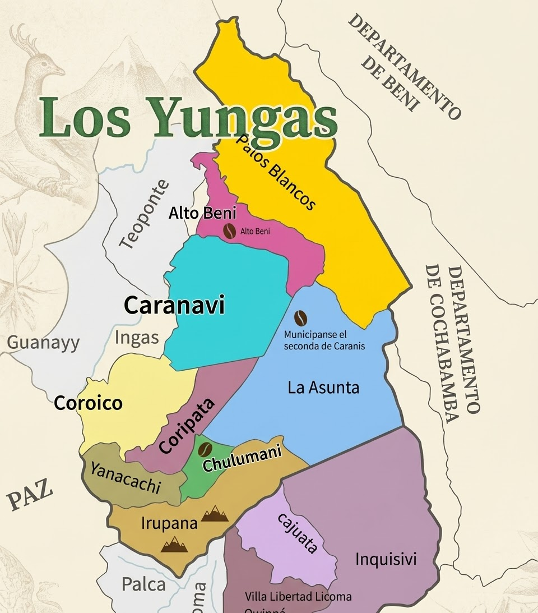
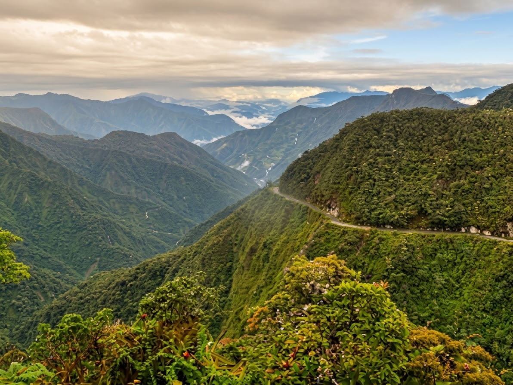
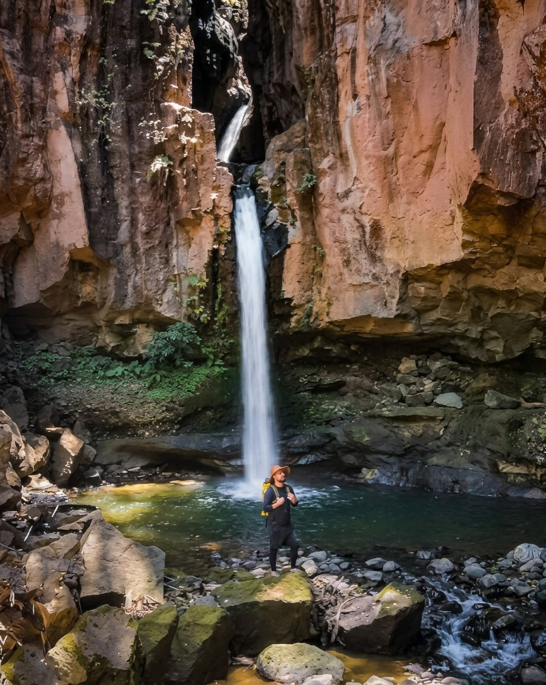
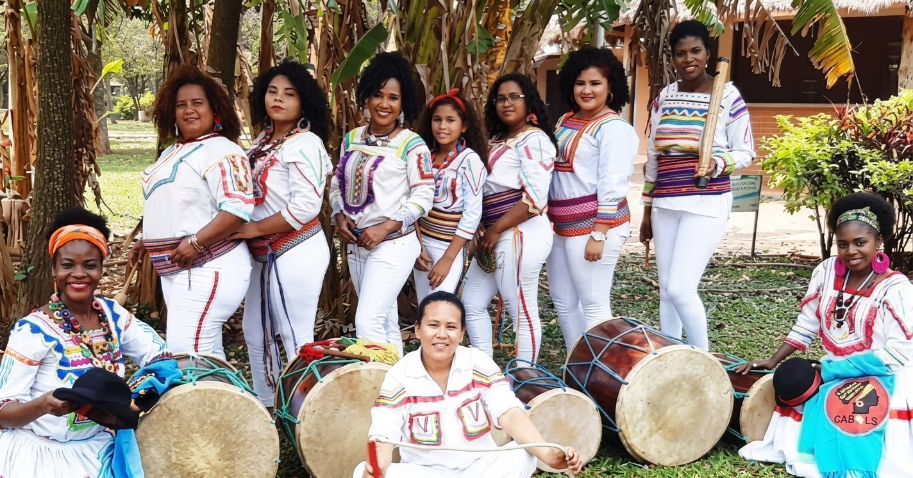
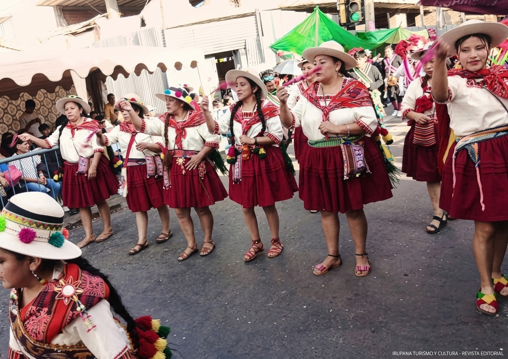
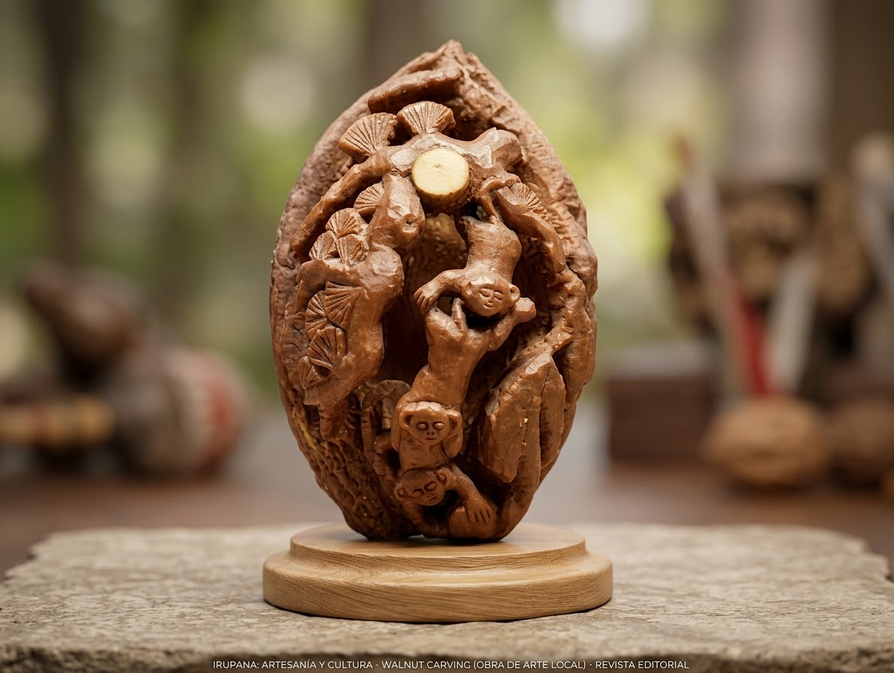

UN DESTINO ENTRE MONTAÑA Y SELVA
Irupana —
Yungas con historia,
naturaleza y sabor
Descubre el municipio de los valles cálidos de Sud Yungas: ríos, cascadas, cafetales, cultura afroboliviana y aventura.
UN ENCUENTRO DE MUNDOS
Altura andina.
Alma yungueña.
Entre nevados y bosques húmedos, Irupana reúne paisajes que cambian con cada curva y una cultura que se siente en sus plazas, sus caminos y el ritmo de la saya.
Conoce antes de venir ↗
EN CIFRAS
MONTAÑA · BOSQUE · COMUNIDAD
Tres paisajes.
Un solo viaje.
Recorre con la mirada los contrastes de Irupana: la profundidad verde de los Yungas, el agua entre las rocas y una cultura que se comparte.





EL DESTINO, A TU MANERA
Un mapa para perderse bien.
Encuentra naturaleza, historia y caminos que conectan cada rincón del municipio.
14 FORMAS DE VIVIR LOS YUNGAS
Pequeños desvíos.
Grandes historias.
ELIGE TU PROPIO RITMO
Cuatro rutas.
Un mismo asombro.
Arma tu recorrido entre cultura viva, paisajes de agua, huellas antiguas y cielos abiertos.
SABORES DE LOS YUNGAS
Siéntate. Estás en casa.
Una cocina generosa, hecha de productos locales, recetas familiares y café cultivado bajo sombra.
Precios de referencia para este mockup; confirma la oferta local antes de tu visita.
LO ESENCIAL, SIN COMPLICACIONES
Tu viaje
empieza aquí.
Datos prácticos para que solo tengas que preocuparte de disfrutar el camino.
¿LISTO PARA VENIR?
Irupana te
está esperando.
Déjanos tu consulta y te orientaremos para preparar tu visita.